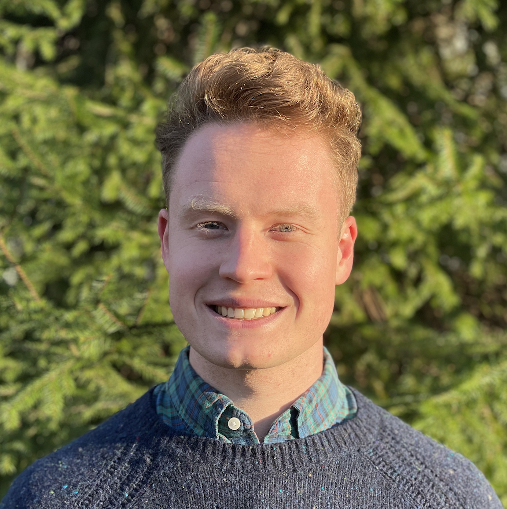

I am a postdoc at CMU with J. Zico Kolter. I received my Ph.D. from Penn in 2024, where I worked with Hamed Hassani & George J. Pappas.
My goal is to make AI safe for people to use. Because modern AIs are so complex and capable, finding ways to make AI safe involves tools from different areas of math and engineering. My research, in particular, draws on tools from statistics, optimization, and control theory.
Reach me at arobey(at)andrew(dot)cmu(dot)edu.
News
- Slides from my lecture in CS 7180 (Verifiable ML) at Northeastern.
- Our work on jailbreaking robots was covered by IEEE Spectrum.
- We won the Best Poster Award at a workshop on robotic safety.
- Slides from my talk on jailbreaking at USC (Oct. 16).
- Our paper on jailbreaking LLM-controlled robots is online.
- I was named a Rising Star in Adversarial ML at NeurIPS '24.
- JailbreakBench was accepted to the benchmarks track at NeurIPS '24.
- I joined Gray Swan as a research contractor.
- I started a postdoc at CMU with J. Zico Kolter.
- Slides from my Ph.D. thesis defense.
- Our red teaming public policy proposal received on oral at ICML '24.
- Our work on red teaming was covered in The Washington Post.
- Our non-zero-sum adv. training paper was accepted at ICLR '24.
- Slides from my lecture in CIS 7000 (Trustworthy ML) at Penn (Feb. 12).
- I will be an instructor at Swarthmore College for the spring term.